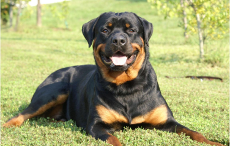
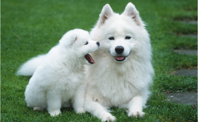

Собаки - это четвероногие животные, родственники диких волков. Много-много лет назад человек приручил собаку, чтобы та защищала его, охраняла дом, скот... Современные люди тоже заводят собак, но не только как охранника и помощника, но и просто как друга
 Разработчик Гилев А.М.